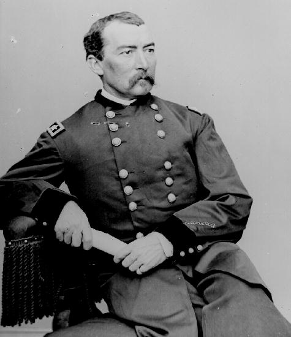
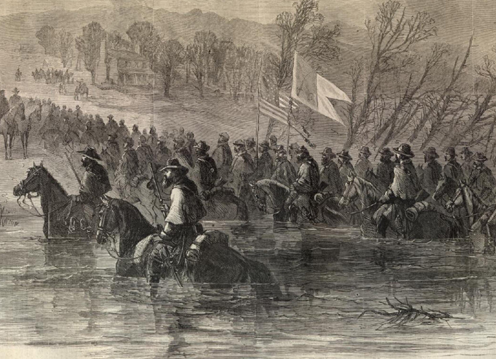

|
Early in the summer of 1864, with his army entrenched
at Petersburg, General Robert E. Lee ordered troops under
the command of General Jubal A. Early into the Shenandoah
Valley. The Valley, located between Virginia and Tennessee,
was of primary strategic value to both sides. Not only did
it provide an avenue of attack into Maryland for the
Confederates but it also provided necessary food supplies
for General Lee's Army of Northern Virginia. The Confederacy
had attempted to maintain a presence there since the
beginning of the war and Union efforts to drive them from
the Valley had proven futile. Confederate General Thomas
|

Maj. Gen. Philip Sheridan
|
"Stonewall" Jackson's Shenandoah Valley campaign of 1862
helped to defeat General George McClellan's attempts to take
Richmond and Lee hoped Early's operations there would have a
similar effect on Grant.
With Early threatening Washington, General Ulysses S.
Grant united several commands into the Middle Military
District under the direction of General Philip Henry
Sheridan. Sheridan's command consisted of a newly created
Army of the Shenandoah Valley, comprising the 6th Corps,
several brigades from the former Army of West Virginia, 2
divisions from Louisiana and 2 divisions of Sheridan's own
cavalry. Sheridan was ordered to go after Jubal Early and
"follow him to the death." If Early's army could not be
destroyed then Sheridan was to drive them up the valley and
prevent the Confederates from returning to the lower Valley
again.
Sheridan had been made aware, by both Grant and Secretary
of War Edwin Stanton, of the importance of success in his
campaign because of the impending presidential election. As
a result, Sheridan initially displayed caution in assembling
his command and sparred with Early for 6 weeks. However, on
September 19, Sheridan's 37,000 men attacked the 15,000
rebels at Winchester. With his forces overrun and some 2,000
rebels captured, Early retreated to Fisher's Hill, just
south of Strasburg. On September 22, Sheridan scored another
victory and drove Early about 60 miles further south to a
pass in the Blue Ridge.
While attempting to destroy Early's army, Sheridan also
followed the second part of Grant's instructions: that is
to prevent any Confederate army from returning to the
Valley. Grant ordered that "if the war was to last another
year we want the Shenandoah Valley to remain a barren
waste." Sheridan added "The people must be left nothing,
but their eyes to weep over the war." Sheridan followed
Grant's instructions to the letter destroying mills and
barns filled with wheat, hay and farming implements, taking
whatever provisions and stock he needed and destroying the
rest. He promised that by the time he was through, "the
Valley, from Winchester up to Staunton, ninety-two miles,
will have little in it for man or beast." Sheridan was true
to his word, destroying the farms of Confederate
sympathizers.
Lee was determined not to lose the Shenandoah Valley
without a fight and he reinforced Early's depleted forces
with an infantry division and a cavalry brigade. On October
16, Sheridan left his army near Cedar Creek, 15 miles south
of Winchester, to go to Washington for a war conference with
General Henry Halleck and Secretary Stanton.
On the night of October 18, Early ordered 4 Confederate
divisions into a position for a dawn attack on Sheridan's
|

An engraving of Sheridan's troops in action
from Harper's Weekly.
|
unsuspecting forces. With the attack the Union army was
caught completely unaware, and forced into retreat. Early's
soldiers, hungry and poorly equipped, broke ranks to forage
the Union camp. Sheridan, camped at Winchester, on his way
back from Washington at the time of the attack, arrived at
the battlefield just in time. Coming across his retreating
men, Sheridan quickly understood what had happened and
realized that only he could restore confidence to his army.
Riding among his men, hat waving, Sheridan was greeted with
delight. He roused his men with such appeals as "If I had
been with you this morning this disaster would not have
happened. We must face the other way; we will go back and
recover our camp." On meeting a chaplain and asking him how
things were at the front the chaplain replied, "Everything
is lost; but all will be right when you get there." Faced
with a renewed attack by a revived Army of the Shenandoah
Valley, Early's army disintegrated as it fled south ahead of
the advancing Union forces. Sheridan's actions that day are
generally recognized as one of the most inspired acts of
personal battlefield leadership during the war. He turned a
decisive defeat into a glorious victory.
Early's defeat at Cedar Creek destroyed the effectiveness
of his army to operate in the Shenandoah Valley, though
Sheridan's campaign continued there until March 1865. The
Battle of Waynesboro marked the last encounter of the
campaign and with it Early's army was destroyed. Sheridan's
success in the Shenandoah Valley meant that not only could
Lee no longer threaten Washington through the Valley, but
also that the Confederacy had also lost a valuable source of
food for the Army of Northern Virginia. Grant, thanks to the
Sheridan campaign, could concentrate his entire force on the
Richmond-Petersburg front and on bringing the war to an end,
without fearing a Confederate force in the Shenandoah
Valley.
Source: Joan Waugh, ed., Facts on File Encyclopedia of American
History: Civil War and Reconstruction, 1856 to 1869 (New York: Facts on
File, 2003), 317-318.
|